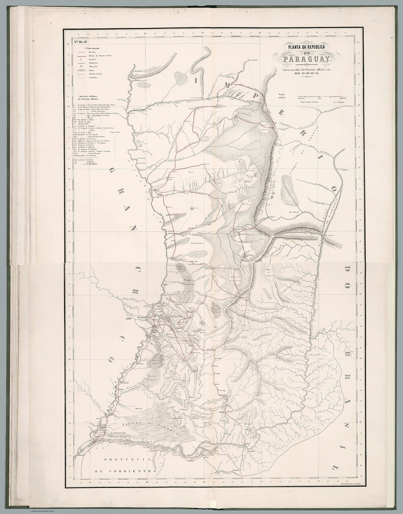
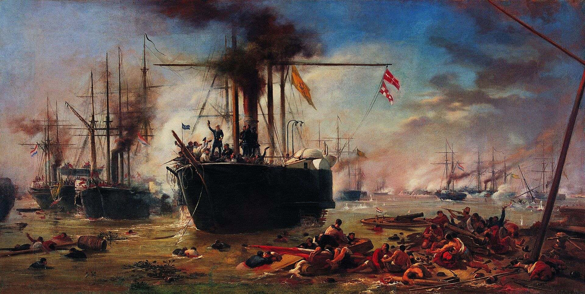
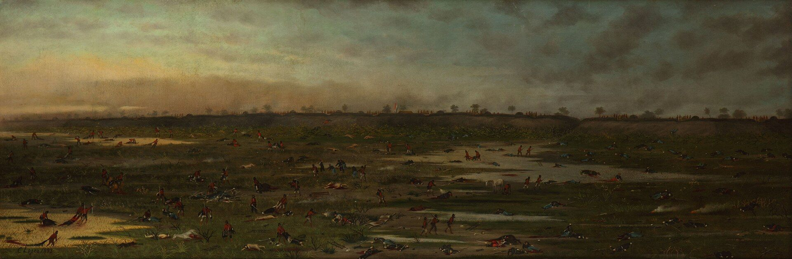

Rios como estradas
Paraná, Paraguai e Uruguai ligavam o interior ao estuário do Prata. Por eles circulavam pessoas, mercadorias e tropas.


Trabalho de História · Mecatrônica 2
Poder regional, rios estratégicos e o custo humano do maior conflito internacional da América do Sul no século XIX.
Pedro Henrique · Clara Maria · Anthony Marcos · Gabriel Willian · Leandro Farias · Lohan David
02 Contexto histórico
Na segunda metade do século XIX, os países da região ainda consolidavam suas instituições e enfrentavam disputas internas e de fronteira. No centro de tudo estavam os rios. [1] [2]
Paraná, Paraguai e Uruguai ligavam o interior ao estuário do Prata. Por eles circulavam pessoas, mercadorias e tropas.
Sem litoral marítimo, o Paraguai dependia da navegação fluvial para chegar ao comércio externo — economia, defesa e soberania passavam pelos rios.
Limites indefinidos, conflitos internos e rivalidades por influência regional marcavam Brasil, Argentina, Uruguai e Paraguai.
A geografia ajuda a entender os objetivos estratégicos, mas não explica sozinha as causas da guerra.
03 Causas
As causas de longo prazo devem ser separadas dos acontecimentos que precipitaram o conflito em 1864–1865.
04 Países envolvidos
Os interesses não formavam blocos homogêneos: cálculos políticos de cada governo mudaram ao longo da guerra. Toque em um cartão para ver o papel de cada país no conflito.
Retratos: D. Pedro II (Klumb, 1865), Bartolomé Mitre (Du Mesnil, 1862), Venancio Flores (c. 1865) e Solano López (c. 1862) · Wikimedia Commons, domínio público. Contornos: fronteiras atuais.
Localizações aproximadas · regiões com limites atuais, só como referência
05 Início do conflito
Diante do ultimato do Império do Brasil ao governo blanco do Uruguai, o Paraguai declara que a ocupação do território uruguaio seria um atentado ao equilíbrio do Prata.
Tropas do Império entram no Uruguai em apoio aos colorados de Venancio Flores. Paysandu é cercada e cai em janeiro de 1865.
No rio Paraguai, forças paraguaias apreendem o vapor brasileiro que seguia para Mato Grosso.
Tropas paraguaias atacam o Forte de Coimbra e avançam pelo sul da província brasileira.
Depois que a Argentina nega passagem às tropas paraguaias, o Paraguai ataca a província de Corrientes — e a reação leva à Tríplice Aliança.
Fronteiras atuais (Natural Earth), só como referência
06 Tríplice Aliança
Sem saída para o mar e dependente de rios que passavam por territórios vizinhos, o país enfrentaria a coalizão.
Forneceu a maior parte das tropas aliadas e a esquadra que atuou nos rios. Entre seus comandantes estiveram Osório e, a partir do fim de 1866, Caxias.
Pelo tratado, Bartolomé Mitre assumiu o comando inicial das forças aliadas em terra. A guerra enfrentou oposição em províncias do interior.
O governo colorado de Venancio Flores completou a aliança. Flores comandou a vanguarda aliada em 1865; o contingente uruguaio foi o menor.
Buenos Aires · 1º de maio de 1865
Assinado em segredo, o texto previa que os aliados não negociariam a paz em separado e só deporiam as armas após a queda do governo de Solano López — e declarava que a guerra não era contra o povo paraguaio.
07 Cronologia
Da crise diplomática à campanha final, o conflito mudou de escala e de frente militar. Clique em um acontecimento.
O Império do Brasil intervém na guerra civil uruguaia, ao lado dos colorados de Venancio Flores. Paysandu é cercada entre dezembro de 1864 e janeiro de 1865.
No rio Paraguai, forças paraguaias apreendem o vapor brasileiro. O episódio é tomado como marco inicial da guerra.
Tropas paraguaias atacam o Forte de Coimbra e avançam pelo sul da província brasileira.
A ofensiva paraguaia atinge a província argentina de Corrientes e amplia o conflito.
Assinado em Buenos Aires por representantes do Brasil, da Argentina e do Uruguai.
No rio Paraná, perto de Corrientes, a esquadra brasileira derrota a paraguaia e passa a dominar a navegação. [5]
Cercada no Rio Grande do Sul, a coluna paraguaia se rende, com a presença de D. Pedro II.
Pouco depois da invasão aliada do território paraguaio, uma das maiores batalhas da guerra.
O ataque aliado às trincheiras paraguaias termina em derrota, com grandes perdas.
Encouraçados brasileiros forçam a passagem pela fortaleza que controlava o rio Paraguai; a posição é ocupada em julho.
Itororó (6), Avaí (11) e Lomas Valentinas (21–27): combates que abrem caminho para Assunção.
Tropas aliadas ocupam a capital paraguaia. A guerra, porém, continua no interior.
Piribebuy (12 ago.) e Acosta Ñu, ou Campo Grande (16 ago.), entre os combates da fase final.
Solano López morre em Cerro Corá — marco geralmente adotado para o fim do conflito.
09 Campanhas e batalhas
Fotografias, pinturas e gravuras não são intercambiáveis: a fotografia registra uma cena situada; a pintura histórica organiza visualmente a memória de um evento.
10 Consequências humanas
HumanasSociaisPolíticasEconômicas
11 Consequências políticas e econômicas
HumanasSociaisPolíticasEconômicas
O fim das operações em 1870 não encerrou os efeitos da guerra: ocupação, reorganização política e negociações de limites continuaram por anos.
12 Interpretações históricas
Ao longo do tempo, autores escolheram causas, personagens e documentos diferentes. As correntes não são blocos rígidos: obras podem combinar argumentos. [8] [10]
Tradicional
Destaca governantes, comandantes e patriotismo. Organizou a cronologia e a documentação militar.
Limite: narrativa heroica, com pouca atenção a grupos subalternizados.
Revisionista
Questionou a narrativa patriótica e deu peso a estruturas econômicas, ao imperialismo e às consequências sociais.
Limite: atribuir à influência britânica papel determinante pode tornar a explicação monocausal.
Abordagens recentes
Reexaminam a formação dos Estados no Prata e combinam política, diplomacia, história social e pesquisa documental. [2]
Desafio: comparar fontes de grupos distintos e lidar com lacunas documentais.

13 Conclusão
Como as disputas políticas e estratégicas no Prata contribuíram para a guerra, e de que maneira o conflito transformou a vida social e a organização política dos países envolvidos?
A guerra foi produto de uma crise regional em que interesses estatais, navegação, intervenção política e escolhas militares se combinaram. Seus efeitos foram desiguais e duradouros — sobretudo para o Paraguai.
Compreender a guerra exige confrontar documentos, interpretações e memórias — reconhecendo a complexidade histórica e os custos humanos de decisões tomadas em nome da soberania e do poder.
Faixa: Cándido López, Después de la batalla de Curupaytí, 1893 · domínio público
14 Referências
Pesquisa bibliográfica e documental, de abordagem qualitativa: artigos, trabalhos universitários, documentos institucionais e fontes visuais. Mapas, fotografias e gravuras foram tratados como fontes, distinguindo registro documental, imagem produzida durante a guerra e representação artística posterior. Acesso às referências: 26 out. 2026.
Pedro Henrique · Clara Maria · Anthony Marcos · Gabriel Willian · Leandro Farias · Lohan David
Trabalho escolar em formato digital. Para uma entrega formal, completem a identificação institucional, local, ano e professor(a), conforme as normas da escola.
Use ← → ou deslize para navegar
Índice da apresentação
Navegação
No celular ou tablet: deslize para os lados para mudar de slide.
Áudio
Verificando gravações…
Trilha ambiente discreta, sintetizada no próprio navegador (não é uma gravação). Opcional.